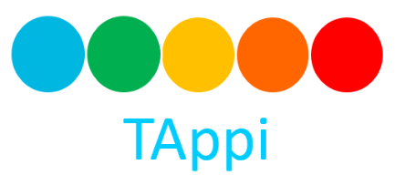

TG por TAppiLuisa Alvarez Valencia
Andres Pinedo Gutierrez
Paula Alejandra Rocha Sabogal
Código fuente

Modalidad: Aplicación
Objetivo:
Desarrollar una aplicación móvil que permita realizar la
captura inteligente de datos para agilizar el proceso del Triage acorde a los diferentes roles
(usuarios) que tiene el sistema.